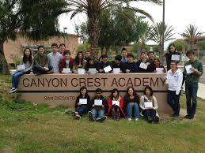

It all started in 9th grade English Honors, in Mr. Leal's class. He pulls up a picture of a renaissance painting of ancient Greece, due to my skills I was able to analyze the photo. I was the only one to talk about the lighting having some significance, Mr. Leal dumbfound my supreme knowledge was impressed, naming me Marko the great. Since I gained so much aura and confidence my peers respected me, but once at the top one can only go down. I answered another question, but this time it was so wrong that I got demoted to, Marko the Mediocare. Which is how I got my name.
I was born in San Diego, in a hospital. I got transported to the house I live in currently. I was then fed and did stuff until I could walk and put together words to create sentences. I was then sent a preschool, which turned to normal school as I grew up. In preschool, I don't remember much but in normal school I learned stuff. I would also do stuff over the weekends in other places or just my house.
I like food and drinks, for example: pizza. I also like to do physical stuff like bike and climb. I like to do non physical activities as well such as read and do math. My favorite place is probably the beach, mountains, forest or desert. I very much enjoy desserts.